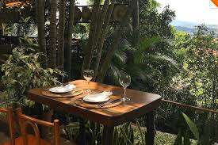

For a good sunday meal, why don't we have a brazilian/italian/mexican menu?
The main dish is Macarronada, or pasta in proper italian.
For dessert, the most known Brazilian sweet - Brigadeiro!
And to freshen up, some good old Mexican style Mojitos!